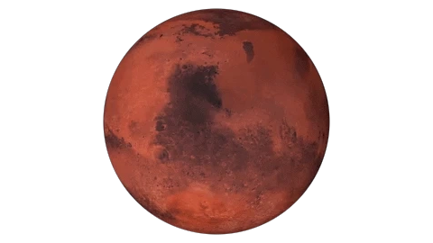

Mars is the fourth planet from the Sun, often called the "Red Planet" due to its reddish appearance caused by iron oxide, or rust, on its surface. It is one of the most studied planets due to its potential for past or present life.
Mars has been observed since ancient times because of its distinctive reddish color in the night sky. It was named after the Roman god of war, a fitting name given its blood-red appearance.
Mars has a diameter of about 6,779 kilometers, roughly half the size of Earth. It orbits the Sun at an average distance of about 228 million kilometers, placing it just outside Earth's orbit in the solar system.
Mars has a surface shaped by ancient volcanic activity, impact craters, and erosion. Its features include the largest volcano in the solar system, Olympus Mons, which stands about three times taller than Mount Everest, and a vast canyon system called Valles Marineris.
Mars has a thin atmosphere composed mostly of carbon dioxide, which is not thick enough to retain much heat. This results in cold temperatures, with average surface temperatures around -63 degrees Celsius, and occasional massive dust storms that can cover the entire planet.
Mars has two small, irregularly shaped moons, Phobos and Deimos, which are thought to be captured asteroids. Phobos is slowly spiraling closer to Mars and may eventually break apart or crash into the planet.
Mars is a major target for space exploration, with numerous rovers and orbiters sent to study its geology, climate, and potential for past or present life. Missions such as Curiosity and Perseverance have searched for signs of ancient water and microbial life, and Mars remains a leading candidate for future human exploration.